Posłuchaj ula przed przeglądem
Nagraj 45 sekund przy wylotku i zobacz, czy ul brzmi jak zwykle. Porównanie z własną bazą ula, dziennik przeglądów i wspólna pasieka.
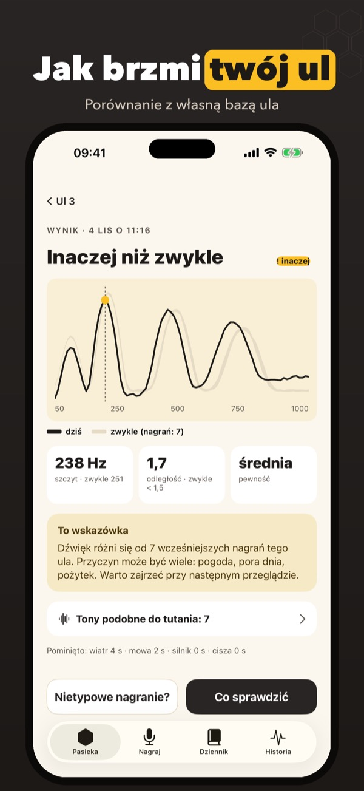
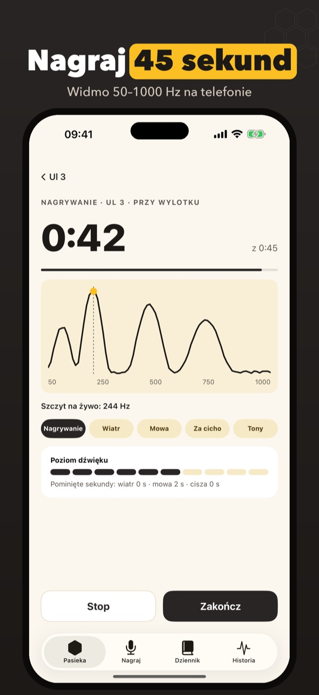
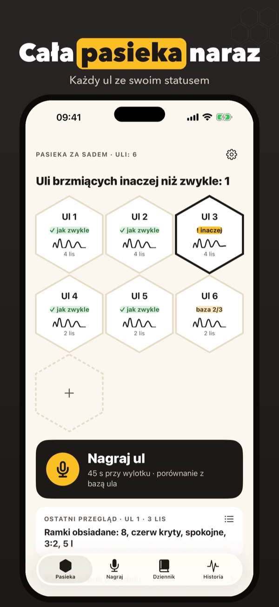
Apisona pomaga pszczelarzom posłuchać ula, zanim go otworzą. Połóż telefon przy wylotku, nagraj 30–60 sekund, a aplikacja policzy widmo dźwięku na telefonie i porówna je z wcześniejszymi nagraniami tego samego ula. Wynik to prosta wskazówka: jak zwykle albo inaczej niż zwykle, z listą rzeczy do sprawdzenia przy przeglądzie.
Dwa ule z nagraniem, porównaniem z bazą i dziennikiem działają bez zakupu. Apisona Plus to jednorazowy zakup: dowolna liczba uli, historia dźwięku, porównanie pasieki, tony podobne do tutania, plik wspólnej pasieki. Bez subskrypcji, bez reklam.
Apisona słucha tylko podczas nagrania i analizuje dźwięk na telefonie; nagrania nie są zapisywane. Wyniki to wskazówki, a nie ocena stanu rodziny: o tym, co zrobić w ulu, decydujesz ty po przeglądzie.
Terms of Use (EULA): https://www.apple.com/legal/internet-services/itunes/dev/stdeula/
Privacy: https://baytechbv.github.io/privacy/apisona-eu/
Poslech úlu před prohlídkou
Nahraj 45 sekund u česna a uvidíš, jestli úl zní jako obvykle. Srovnání s vlastní bází úlu, deník prohlídek a společný včelín.
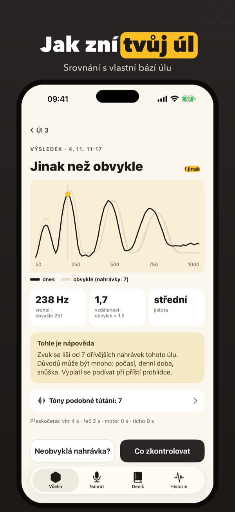
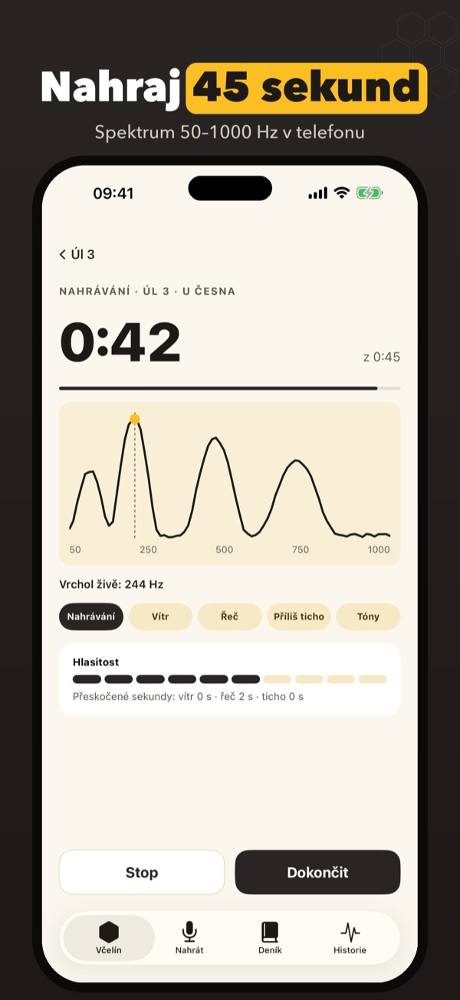
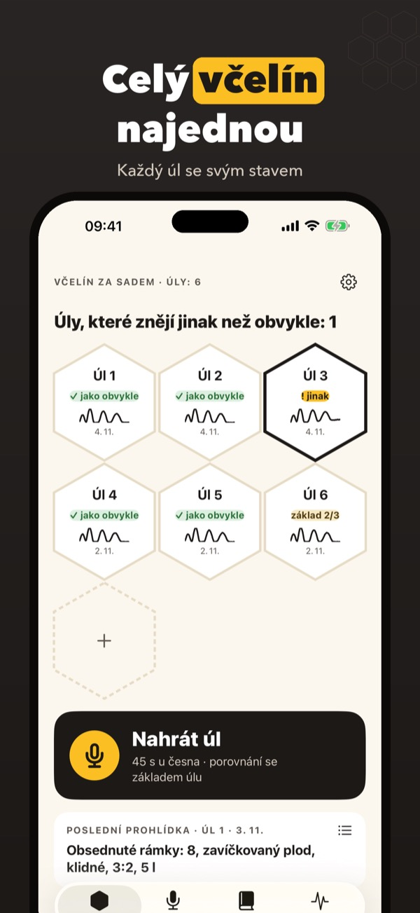
Apisona pomáhá včelařům poslechnout si úl dřív, než ho otevřou. Polož telefon k česnu, nahraj 30–60 sekund a aplikace spočítá spektrum zvuku přímo v telefonu a porovná ho s dřívějšími nahrávkami stejného úlu. Výsledek je jednoduchý tip: jako obvykle, nebo jinak než obvykle, se seznamem věcí ke kontrole při prohlídce.
Dva úly s nahráváním, srovnáním s bází a deníkem fungují bez nákupu. Apisona Plus je jednorázový nákup: neomezeně úlů, historie zvuku, srovnání včelína, tóny podobné tútání, soubor společného včelína. Bez předplatného, bez reklam.
Apisona poslouchá jen při nahrávání a zvuk analyzuje v telefonu; nahrávky se neukládají. Výsledky jsou tipy, ne hodnocení stavu včelstva: co v úlu uděláš, rozhoduješ ty po prohlídce.
Terms of Use (EULA): https://www.apple.com/legal/internet-services/itunes/dev/stdeula/
Privacy: https://baytechbv.github.io/privacy/apisona-eu/
Ascolta l’arnia, poi aprila
Registra 45 secondi davanti alla porticina e vedi se l’arnia suona come al solito. Confronto con la sua base, diario delle visite e apiario condiviso.
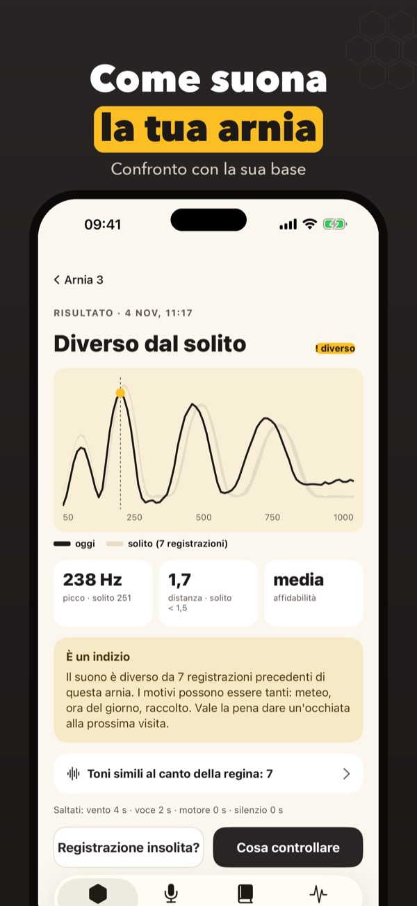
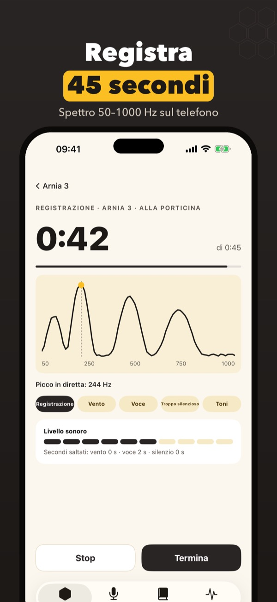
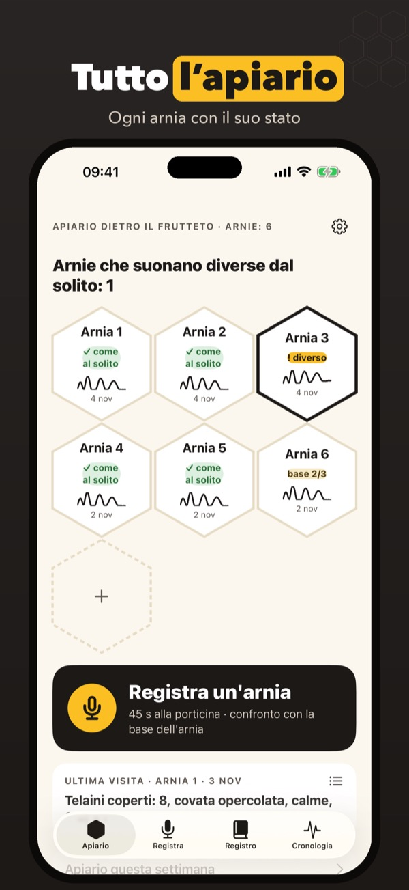
Apisona aiuta gli apicoltori ad ascoltare l’arnia prima di aprirla. Metti il telefono davanti alla porticina, registra 30–60 secondi: l’app calcola lo spettro del suono sul telefono e lo confronta con le registrazioni precedenti della stessa arnia. Il risultato è un’indicazione semplice, come al solito o diverso dal solito, con una lista di cose da guardare alla visita.
Due arnie con registrazione, confronto con la base e diario funzionano senza acquisto. Apisona Plus è un acquisto unico: arnie illimitate, storico del suono, confronto dell’apiario, toni simili al canto della regina, file dell’apiario condiviso. Niente abbonamento, niente pubblicità.
Apisona ascolta solo durante la registrazione e analizza il suono sul telefono; le registrazioni non vengono salvate. I risultati sono indicazioni, non una valutazione dello stato della famiglia: cosa fare nell’arnia lo decidi tu dopo la visita.
Terms of Use (EULA): https://www.apple.com/legal/internet-services/itunes/dev/stdeula/
Privacy: https://baytechbv.github.io/privacy/apisona-eu/
Écoutez votre ruche d’abord
Enregistrez 45 secondes devant le trou de vol et voyez si la ruche sonne comme d’habitude. Comparaison avec sa base, carnet de visites, rucher partagé.
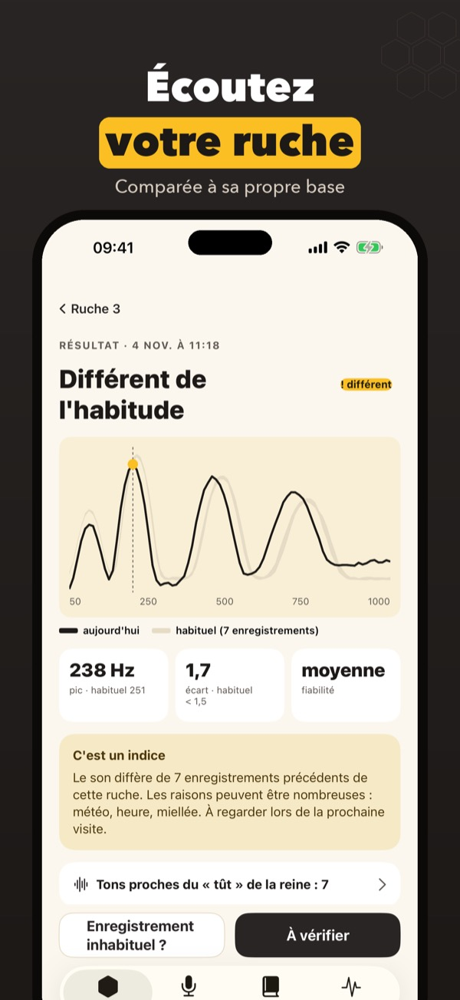
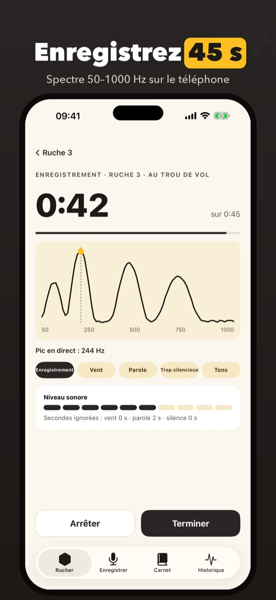
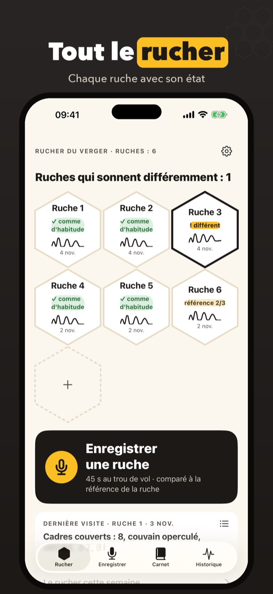
Apisona aide les apiculteurs à écouter la ruche avant de l’ouvrir. Posez le téléphone devant le trou de vol, enregistrez 30 à 60 secondes : l’app calcule le spectre du son sur le téléphone et le compare aux enregistrements précédents de la même ruche. Le résultat est une indication simple, comme d’habitude ou différent de d’habitude, avec une liste de points à regarder lors de la visite.
Deux ruches avec enregistrement, comparaison à la base et carnet fonctionnent sans achat. Apisona Plus est un achat unique : ruches illimitées, historique du son, comparaison du rucher, sons proches du chant des reines, fichier du rucher partagé. Sans abonnement, sans pub.
Apisona n’écoute que pendant l’enregistrement et analyse le son sur le téléphone ; les enregistrements ne sont pas conservés. Les résultats sont des indications, pas une évaluation de l’état de la colonie : ce que vous faites dans la ruche, vous le décidez après la visite.
Terms of Use (EULA): https://www.apple.com/legal/internet-services/itunes/dev/stdeula/
Privacy: https://baytechbv.github.io/privacy/apisona-eu/
Das Volk hören, dann öffnen
Nimm 45 Sekunden am Flugloch auf und sieh, ob das Volk wie sonst klingt. Vergleich mit seiner eigenen Basis, Stockkarte und geteilter Bienenstand.
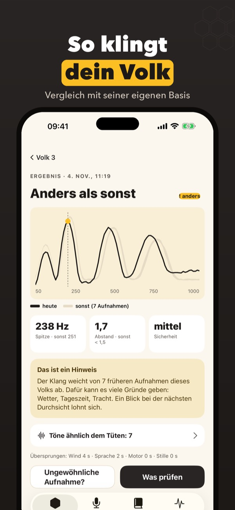
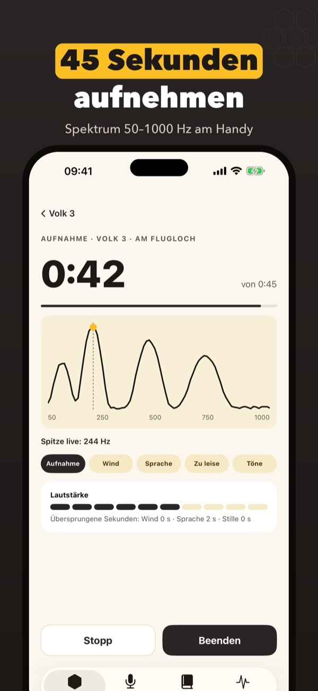
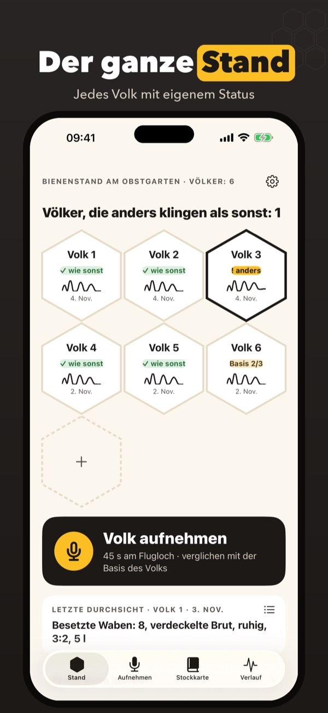
Apisona hilft Imkerinnen und Imkern, ein Volk anzuhören, bevor sie die Beute öffnen. Leg das Handy ans Flugloch, nimm 30–60 Sekunden auf: Die App berechnet das Klangspektrum auf dem Handy und vergleicht es mit früheren Aufnahmen desselben Volks. Das Ergebnis ist ein einfacher Hinweis, wie sonst oder anders als sonst, mit einer Liste, worauf du bei der Durchsicht achten kannst.
Zwei Völker mit Aufnahme, Vergleich mit der Basis und Stockkarte funktionieren ohne Kauf. Apisona Plus ist ein Einmalkauf: beliebig viele Völker, Klangverlauf, Standvergleich, Töne ähnlich dem Tüten, Datei für den geteilten Stand. Kein Abo, keine Werbung.
Apisona hört nur während der Aufnahme zu und analysiert den Klang auf dem Handy; Aufnahmen werden nicht gespeichert. Die Ergebnisse sind Hinweise, keine Bewertung des Volkszustands: Was du im Volk tust, entscheidest du nach der Durchsicht.
Terms of Use (EULA): https://www.apple.com/legal/internet-services/itunes/dev/stdeula/
Privacy: https://baytechbv.github.io/privacy/apisona-eu/